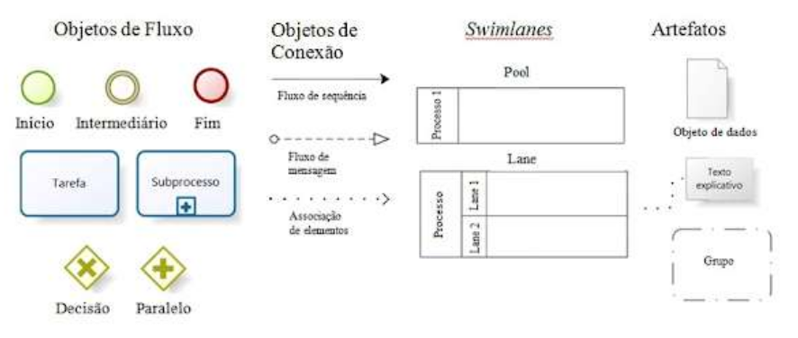
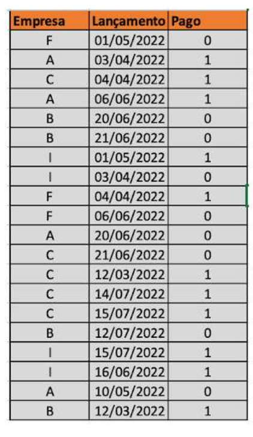
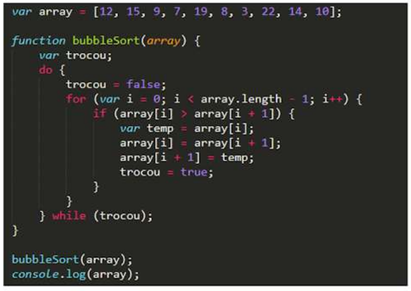
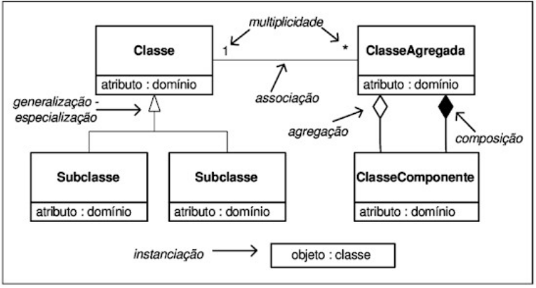
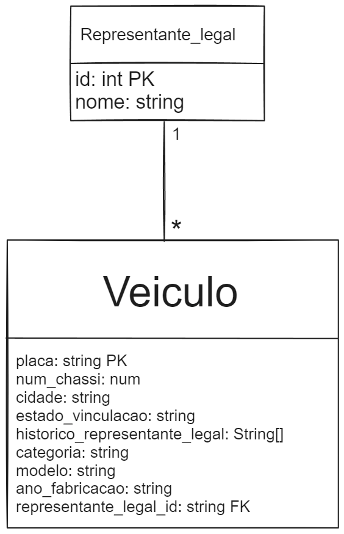

Questão 1
A empresa ABC tem o interesse de automatizar o processo de licenciamento de bebidas com teor alcoólico acima de 90%.
Neste processo, o solicitante que necessita desta licença para vender este tipo de produto preenche um formulário em papel e entrega seu pedido junto ao protocolo do Ministério, que por sua vez encaminha esta demanda para a Coordenação de Destilados (CDEST).
Nesta área, o Chefe da unidade distribui a demanda entre os analistas na qual uma parte do time faz a análise documental e a outra parte faz a análise de mérito, em paralelo. Uma vez finalizadas as análises, o processo retorna à Chefia que emite ou não o certificado para o solicitante. Independentemente do resultado, a resposta da Chefia é enviada ao protocolo que informa ao solicitante que a demanda foi concluída e respectivo resultado, ou seja, se o pedido foi deferido ou indeferido. Em caso de deferimento, o requerente vai até o protocolo buscar a licença. Em caso de indeferimento, o solicitante é apenas informado e não pode entrar com nenhum tipo de recurso contra a decisão.
Tendo em vista a eficiência do processo por meio da redução de gastos, a Empresa ABC pretende digitalizar este serviço.
Nesta questão, espera-se que você elabore um desenho do processo descrito acima pensando em uma perspectiva de execução por meio de um sistema informatizado. Utilize notação BPMN
Siga o exemplo abaixo.
Resposta:
Questão 2
Ranking de pagadores: A consultoria PLANNING foi contratada pela Empresa PAGUE para construir um modelo que calculasse o ranking de bons pagadores on-line. Para isso disponibilizou a tabela de status dos pagamentos previstos por empresa (1 - Pagou 0 - Não pagou).
Dado o enunciado em questão, crie um bloco de código em JavaScript ou Java que calcule a média de pagamentos por empresa brasieleira e publique o ranking das empresas.
Resposta:
IMPORTANTE: Para ver a saída do script, clique no botão com o ícone de + dentro de um quadrado, depois clique em "Open documentation".
Após isso, feche a aba "Documentation", clicando no "X"
O código também pode ser verificado aqui.
Questão 3
A empresa XPTO tem registrado numa tabela "consumo", os consumos mensais de energia elétrica dos anos 2010-2019. Cada linha representa um ano e cada columna um mês. Considerando esses dados, fazer um algoritmo que imprima:
I. O consumo médio em cada um dos meses destes dez anos;
II. O mês/ano em que a empresa gastou mais energia nestes dez anos.
Nesta questão, espera-se que você escreva um bloco de código, em JavaScript ou Java, que represente um encadeamento lógico que execute a rotina indicada no enunciado.
Siga o exemplo abaixo
Resposta:
IMPORTANTE: Para ver a saída do script, clique no botão com o ícone de + dentro de um quadrado, depois clique em "Open documentation".
Após isso, feche a aba "Documentation", clicando no "X"
O código também pode ser verificado aqui.
Questão 4
Desenhe um modelo de dados para o cadastro nacional de veículos. Sabe-se que:
I. O veículo possui sempre uma placa única em todo o país, além de um número de chassi e cidade/estado de vinculação;
II. O veículo possui sempre um responsável legal por ele. É necessário manter o histórico desta responsabilidade (propriedade);
III. O veículo pertence sempre a uma categoria;
IV. Um representante legal pode possuir mais de um veículo.
Nesta questão, espera-se que você desenhe um modelo relacional que atenda aos requisitos indicados no enunciado. Anexo a esta prova, está disponível uma cartilha indicando notação UML.
Siga o exemplo abaixo
Resposta:
Questão 5
Com base no modelo de dados da questão anterior, escreva uma query SQL que retorne as placas e estado/cidade de todos os veículos que estão cadastrados e cujo responsável legal chama-se Joaquim Silva.